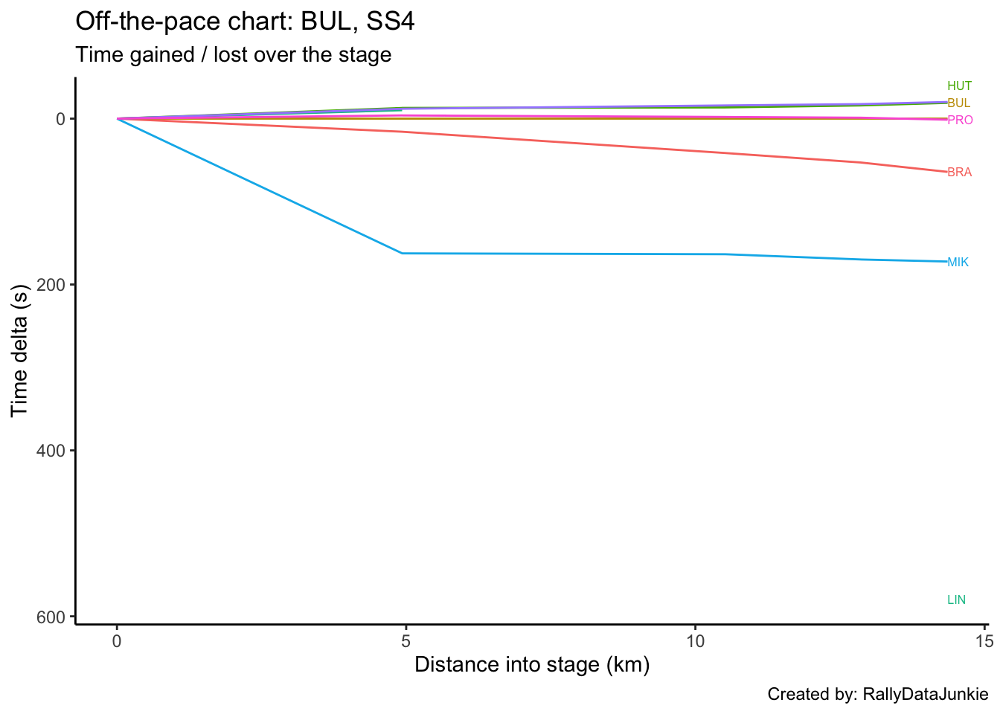

4 SS4 Results
| Pos | Car | Code | Time (s) | Gap | Diff |
|---|---|---|---|---|---|
| 1 | 22 | OST | 572.0 | 26.1 | 2.4 |
| 2 | 30 | HUT | 573.1 | 27.2 | 1.1 |
| 3 | 21 | BUL | 592.1 | 46.2 | 13.6 |
| 4 | 28 | PRO | 593.4 | 47.5 | 1.3 |
| 5 | 24 | BRA | 656.3 | 110.4 | 62.9 |
| 6 | 20 | MIK | 764.4 | 218.5 | 108.1 |
4.1 Stage SS4 Splits Analysis
Reports on splits
4.1.1 Split Locations
Length of each split section in km:
| full_split_distances | stage_dist | |
|---|---|---|
| split_1 | 4.93 | 4.93 |
| split_2 | 5.59 | 10.52 |
| split_3 | 2.34 | 12.86 |
| split_N | 1.50 | 14.36 |
4.1.2 Stage Split Times & Result
Summary of stage split times and overall stage result:
| code | split_1 | split_2 | split_3 | split_N | diffFirstS | position |
|---|---|---|---|---|---|---|
| OST | 191.2 | 403.3 | 491.5 | 572.0 | 0.0 | 9 |
| HUT | 190.2 | 405.7 | 493.1 | 573.1 | 1.1 | 10 |
| BUL | 203.1 | 419.2 | 509.0 | 592.1 | 20.1 | 13 |
| PRO | 199.2 | 417.2 | 507.9 | 593.4 | 21.4 | 14 |
| BRA | 218.9 | 460.7 | 561.9 | 656.3 | 84.3 | 15 |
| MIK | 365.5 | 582.7 | 678.8 | 764.4 | 192.4 | 16 |
| LIN | 192.9 | NA | NA | NA | NA | NA |
4.1.3 Split Time Rankings
Rank of each split time:
| code | split_1 | split_2 | split_3 | split_N |
|---|---|---|---|---|
| OST | 2 | 1 | 1 | 1 |
| HUT | 1 | 2 | 2 | 2 |
| BUL | 5 | 4 | 4 | 3 |
| PRO | 4 | 3 | 3 | 4 |
| BRA | 6 | 5 | 5 | 5 |
| MIK | 7 | 6 | 6 | 6 |
Rank on each split section:
| code | split_1 | split_2 | split_3 | split_N |
|---|---|---|---|---|
| OST | 2 | 1 | 1 | 1 |
| HUT | 1 | 2 | 2 | 2 |
| BUL | 5 | 4 | 4 | 3 |
| PRO | 4 | 3 | 3 | 4 |
| BRA | 6 | 5 | 5 | 5 |
| MIK | 7 | 6 | 6 | 6 |
4.1.4 Split Section Pace
Pace is measured in seconds per kilometer, which is to say, how long it takes to complete each kilometer (lower is better):
| code | split_1 | split_2 | split_3 | split_N |
|---|---|---|---|---|
| OST | 38.78 | 37.94 | 37.69 | 53.67 |
| HUT | 38.58 | 38.55 | 37.35 | 53.33 |
| BUL | 41.20 | 38.66 | 38.38 | 55.40 |
| PRO | 40.41 | 39.00 | 38.76 | 57.00 |
| BRA | 44.40 | 43.26 | 43.25 | 62.93 |
| MIK | 74.14 | 38.86 | 41.07 | 57.07 |
| LIN | 39.13 | NA | NA | NA |
4.1.5 Ultimate Stage Comparisons
Split time comparisons relative to various ultimage stage time calculations.
These views provide various ways of comparing the performance of each driver to various ghost drivers:
- best recorded split time at each split (ultimate actuals): gives an estimate of how well the drivers split times compare with each first ranked split time (time into stage at each split);
- fastest time going from one split to the next (ultimate sections): gives an estimate of how quickly each driver completed each split section relative to the quickest time recorded completing that split section (time taken to go from one split point to the next);
- accumulated ultimate sections times: gives and estimate of how quickly the driver is going relative to the fastest possible completion of the stage based on accumulated ultimate split section times.
4.1.5.1 Ultimate Actuals
Driver times compared to the first ranked recorded split time at each split:
| code | split_1 | split_2 | split_3 | split_N |
|---|---|---|---|---|
| OST | 1.0 | 0.0 | 0.0 | 0.0 |
| HUT | 0.0 | 2.4 | 1.6 | 1.1 |
| BUL | 12.9 | 15.9 | 17.5 | 20.1 |
| PRO | 9.0 | 13.9 | 16.4 | 21.4 |
| BRA | 28.7 | 57.4 | 70.4 | 84.3 |
| MIK | 175.3 | 179.4 | 187.3 | 192.4 |
| ultimate | 0.0 | 0.0 | 0.0 | 0.0 |
4.1.5.2 Ultimate Sections
Split durations rebased relative to the fastest transit of each split section:
| code | split_1 | split_2 | split_3 | split_N |
|---|---|---|---|---|
| OST | 1.0 | 0.0 | 0.8 | 0.5 |
| HUT | 0.0 | 3.4 | 0.0 | 0.0 |
| BUL | 12.9 | 4.0 | 2.4 | 3.1 |
| PRO | 9.0 | 5.9 | 3.3 | 5.5 |
| BRA | 28.7 | 29.7 | 13.8 | 14.4 |
| MIK | 175.3 | 5.1 | 8.7 | 5.6 |
| ultimate | 0.0 | 0.0 | 0.0 | 0.0 |
4.1.5.3 Ultimate Accumulated Sections
Actual split times relative to the accumulated ultimate split section times:
| code | split_1 | split_2 | split_3 | split_N |
|---|---|---|---|---|
| OST | 1.0 | 1.0 | 1.8 | 2.3 |
| HUT | 0.0 | 3.4 | 3.4 | 3.4 |
| BUL | 12.9 | 16.9 | 19.3 | 22.4 |
| PRO | 9.0 | 14.9 | 18.2 | 23.7 |
| BRA | 28.7 | 58.4 | 72.2 | 86.6 |
| MIK | 175.3 | 180.4 | 189.1 | 194.7 |
| ultimate | 0.0 | 0.0 | 0.0 | 0.0 |
4.1.6 Split Section Pace Distribution
Distribution of pace values for each split section:

4.2 Driver Report, SS4 - MIK
Stage report for MIK.
| Pos | Car | Code | Time (s) | Gap | Diff |
|---|---|---|---|---|---|
| 9 | 22 | OST | -192.4 | -192.4 | 2.4 |
| 10 | 30 | HUT | -191.3 | -191.3 | 1.1 |
| 13 | 21 | BUL | -172.3 | -172.3 | 13.6 |
| 14 | 28 | PRO | -171.0 | -171.0 | 1.3 |
| 15 | 24 | BRA | -108.1 | -108.1 | 62.9 |
| 16 | 20 | MIK | 0.0 | 0.0 | 108.1 |
4.2.1 Rebased Split Times
MIKs delta at each split compared to other drivers.
| code | split_1 | split_2 | split_3 | split_N |
|---|---|---|---|---|
| OST | -174.3 | -179.4 | -187.3 | -192.4 |
| HUT | -175.3 | -177.0 | -185.7 | -191.3 |
| BUL | -162.4 | -163.5 | -169.8 | -172.3 |
| PRO | -166.3 | -165.5 | -170.9 | -171.0 |
| BRA | -146.6 | -122.0 | -116.9 | -108.1 |
| MIK | 0.0 | 0.0 | 0.0 | 0.0 |
| LIN | -172.6 | NA | NA | NA |
Accumulated stage time deltas at each split:

4.2.2 Within-Split Duration Deltas
MIKs delta in time to complete each split section compared to other drivers:
| code | split_1 | split_2 | split_3 | split_N |
|---|---|---|---|---|
| OST | -174.3 | -5.1 | -7.9 | -5.1 |
| HUT | -175.3 | -1.7 | -8.7 | -5.6 |
| BUL | -162.4 | -1.1 | -6.3 | -2.5 |
| PRO | -166.3 | 0.8 | -5.4 | -0.1 |
| BRA | -146.6 | 24.6 | 5.1 | 8.8 |
| MIK | 0.0 | 0.0 | 0.0 | 0.0 |
| LIN | -172.6 | NA | NA | NA |
4.2.3 Within-Split Pace Deltas
| code | split_1 | split_2 | split_3 | split_N |
|---|---|---|---|---|
| OST | -35.35 | -0.91 | -3.38 | -3.40 |
| HUT | -35.56 | -0.30 | -3.72 | -3.73 |
| BUL | -32.94 | -0.20 | -2.69 | -1.67 |
| PRO | -33.73 | 0.14 | -2.31 | -0.07 |
| BRA | -29.74 | 4.40 | 2.18 | 5.87 |
| MIK | 0.00 | 0.00 | 0.00 | 0.00 |
| LIN | -35.01 | NA | NA | NA |
4.3 Driver Report, SS4 - BUL
Stage report for BUL.
| Pos | Car | Code | Time (s) | Gap | Diff |
|---|---|---|---|---|---|
| 9 | 22 | OST | -20.1 | -20.1 | 2.4 |
| 10 | 30 | HUT | -19.0 | -19.0 | 1.1 |
| 13 | 21 | BUL | 0.0 | 0.0 | 13.6 |
| 14 | 28 | PRO | 1.3 | 1.3 | 1.3 |
| 15 | 24 | BRA | 64.2 | 64.2 | 62.9 |
| 16 | 20 | MIK | 172.3 | 172.3 | 108.1 |
4.3.1 Rebased Split Times
BULs delta at each split compared to other drivers.
| code | split_1 | split_2 | split_3 | split_N |
|---|---|---|---|---|
| OST | -11.9 | -15.9 | -17.5 | -20.1 |
| HUT | -12.9 | -13.5 | -15.9 | -19.0 |
| BUL | 0.0 | 0.0 | 0.0 | 0.0 |
| PRO | -3.9 | -2.0 | -1.1 | 1.3 |
| BRA | 15.8 | 41.5 | 52.9 | 64.2 |
| MIK | 162.4 | 163.5 | 169.8 | 172.3 |
| LIN | -10.2 | NA | NA | NA |
Accumulated stage time deltas at each split:

4.3.2 Within-Split Duration Deltas
BULs delta in time to complete each split section compared to other drivers:
| code | split_1 | split_2 | split_3 | split_N |
|---|---|---|---|---|
| OST | -11.9 | -4.0 | -1.6 | -2.6 |
| HUT | -12.9 | -0.6 | -2.4 | -3.1 |
| BUL | 0.0 | 0.0 | 0.0 | 0.0 |
| PRO | -3.9 | 1.9 | 0.9 | 2.4 |
| BRA | 15.8 | 25.7 | 11.4 | 11.3 |
| MIK | 162.4 | 1.1 | 6.3 | 2.5 |
| LIN | -10.2 | NA | NA | NA |
4.3.3 Within-Split Pace Deltas
| code | split_1 | split_2 | split_3 | split_N |
|---|---|---|---|---|
| OST | -2.41 | -0.72 | -0.68 | -1.73 |
| HUT | -2.62 | -0.11 | -1.03 | -2.07 |
| BUL | 0.00 | 0.00 | 0.00 | 0.00 |
| PRO | -0.79 | 0.34 | 0.38 | 1.60 |
| BRA | 3.20 | 4.60 | 4.87 | 7.53 |
| MIK | 32.94 | 0.20 | 2.69 | 1.67 |
| LIN | -2.07 | NA | NA | NA |
4.4 Driver Report, SS4 - OST
Stage report for OST.
| Pos | Car | Code | Time (s) | Gap | Diff |
|---|---|---|---|---|---|
| 9 | 22 | OST | 0.0 | 0.0 | 2.4 |
| 10 | 30 | HUT | 1.1 | 1.1 | 1.1 |
| 13 | 21 | BUL | 20.1 | 20.1 | 13.6 |
| 14 | 28 | PRO | 21.4 | 21.4 | 1.3 |
| 15 | 24 | BRA | 84.3 | 84.3 | 62.9 |
| 16 | 20 | MIK | 192.4 | 192.4 | 108.1 |
4.4.1 Rebased Split Times
OSTs delta at each split compared to other drivers.
| code | split_1 | split_2 | split_3 | split_N |
|---|---|---|---|---|
| OST | 0.0 | 0.0 | 0.0 | 0.0 |
| HUT | -1.0 | 2.4 | 1.6 | 1.1 |
| BUL | 11.9 | 15.9 | 17.5 | 20.1 |
| PRO | 8.0 | 13.9 | 16.4 | 21.4 |
| BRA | 27.7 | 57.4 | 70.4 | 84.3 |
| MIK | 174.3 | 179.4 | 187.3 | 192.4 |
| LIN | 1.7 | NA | NA | NA |
Accumulated stage time deltas at each split:

4.4.2 Within-Split Duration Deltas
OSTs delta in time to complete each split section compared to other drivers:
| code | split_1 | split_2 | split_3 | split_N |
|---|---|---|---|---|
| OST | 0.0 | 0.0 | 0.0 | 0.0 |
| HUT | -1.0 | 3.4 | -0.8 | -0.5 |
| BUL | 11.9 | 4.0 | 1.6 | 2.6 |
| PRO | 8.0 | 5.9 | 2.5 | 5.0 |
| BRA | 27.7 | 29.7 | 13.0 | 13.9 |
| MIK | 174.3 | 5.1 | 7.9 | 5.1 |
| LIN | 1.7 | NA | NA | NA |
4.4.3 Within-Split Pace Deltas
| code | split_1 | split_2 | split_3 | split_N |
|---|---|---|---|---|
| OST | 0.00 | 0.00 | 0.00 | 0.00 |
| HUT | -0.20 | 0.61 | -0.34 | -0.33 |
| BUL | 2.41 | 0.72 | 0.68 | 1.73 |
| PRO | 1.62 | 1.06 | 1.07 | 3.33 |
| BRA | 5.62 | 5.31 | 5.56 | 9.27 |
| MIK | 35.35 | 0.91 | 3.38 | 3.40 |
| LIN | 0.34 | NA | NA | NA |
4.5 Driver Report, SS4 - FOU
No stage report for FOU.
4.6 Driver Report, SS4 - BRA
Stage report for BRA.
| Pos | Car | Code | Time (s) | Gap | Diff |
|---|---|---|---|---|---|
| 9 | 22 | OST | -84.3 | -84.3 | 2.4 |
| 10 | 30 | HUT | -83.2 | -83.2 | 1.1 |
| 13 | 21 | BUL | -64.2 | -64.2 | 13.6 |
| 14 | 28 | PRO | -62.9 | -62.9 | 1.3 |
| 15 | 24 | BRA | 0.0 | 0.0 | 62.9 |
| 16 | 20 | MIK | 108.1 | 108.1 | 108.1 |
4.6.1 Rebased Split Times
BRAs delta at each split compared to other drivers.
| code | split_1 | split_2 | split_3 | split_N |
|---|---|---|---|---|
| OST | -27.7 | -57.4 | -70.4 | -84.3 |
| HUT | -28.7 | -55.0 | -68.8 | -83.2 |
| BUL | -15.8 | -41.5 | -52.9 | -64.2 |
| PRO | -19.7 | -43.5 | -54.0 | -62.9 |
| BRA | 0.0 | 0.0 | 0.0 | 0.0 |
| MIK | 146.6 | 122.0 | 116.9 | 108.1 |
| LIN | -26.0 | NA | NA | NA |
Accumulated stage time deltas at each split:

4.6.2 Within-Split Duration Deltas
BRAs delta in time to complete each split section compared to other drivers:
| code | split_1 | split_2 | split_3 | split_N |
|---|---|---|---|---|
| OST | -27.7 | -29.7 | -13.0 | -13.9 |
| HUT | -28.7 | -26.3 | -13.8 | -14.4 |
| BUL | -15.8 | -25.7 | -11.4 | -11.3 |
| PRO | -19.7 | -23.8 | -10.5 | -8.9 |
| BRA | 0.0 | 0.0 | 0.0 | 0.0 |
| MIK | 146.6 | -24.6 | -5.1 | -8.8 |
| LIN | -26.0 | NA | NA | NA |
4.6.3 Within-Split Pace Deltas
| code | split_1 | split_2 | split_3 | split_N |
|---|---|---|---|---|
| OST | -5.62 | -5.31 | -5.56 | -9.27 |
| HUT | -5.82 | -4.70 | -5.90 | -9.60 |
| BUL | -3.20 | -4.60 | -4.87 | -7.53 |
| PRO | -4.00 | -4.26 | -4.49 | -5.93 |
| BRA | 0.00 | 0.00 | 0.00 | 0.00 |
| MIK | 29.74 | -4.40 | -2.18 | -5.87 |
| LIN | -5.27 | NA | NA | NA |
4.7 Driver Report, SS4 - JOH
No stage report for JOH.
4.8 Driver Report, SS4 - VEI
No stage report for VEI.
4.9 Driver Report, SS4 - PRO
Stage report for PRO.
| Pos | Car | Code | Time (s) | Gap | Diff |
|---|---|---|---|---|---|
| 9 | 22 | OST | -21.4 | -21.4 | 2.4 |
| 10 | 30 | HUT | -20.3 | -20.3 | 1.1 |
| 13 | 21 | BUL | -1.3 | -1.3 | 13.6 |
| 14 | 28 | PRO | 0.0 | 0.0 | 1.3 |
| 15 | 24 | BRA | 62.9 | 62.9 | 62.9 |
| 16 | 20 | MIK | 171.0 | 171.0 | 108.1 |
4.9.1 Rebased Split Times
PROs delta at each split compared to other drivers.
| code | split_1 | split_2 | split_3 | split_N |
|---|---|---|---|---|
| OST | -8.0 | -13.9 | -16.4 | -21.4 |
| HUT | -9.0 | -11.5 | -14.8 | -20.3 |
| BUL | 3.9 | 2.0 | 1.1 | -1.3 |
| PRO | 0.0 | 0.0 | 0.0 | 0.0 |
| BRA | 19.7 | 43.5 | 54.0 | 62.9 |
| MIK | 166.3 | 165.5 | 170.9 | 171.0 |
| LIN | -6.3 | NA | NA | NA |
Accumulated stage time deltas at each split:

4.9.2 Within-Split Duration Deltas
PROs delta in time to complete each split section compared to other drivers:
| code | split_1 | split_2 | split_3 | split_N |
|---|---|---|---|---|
| OST | -8.0 | -5.9 | -2.5 | -5.0 |
| HUT | -9.0 | -2.5 | -3.3 | -5.5 |
| BUL | 3.9 | -1.9 | -0.9 | -2.4 |
| PRO | 0.0 | 0.0 | 0.0 | 0.0 |
| BRA | 19.7 | 23.8 | 10.5 | 8.9 |
| MIK | 166.3 | -0.8 | 5.4 | 0.1 |
| LIN | -6.3 | NA | NA | NA |
4.9.3 Within-Split Pace Deltas
| code | split_1 | split_2 | split_3 | split_N |
|---|---|---|---|---|
| OST | -1.62 | -1.06 | -1.07 | -3.33 |
| HUT | -1.83 | -0.45 | -1.41 | -3.67 |
| BUL | 0.79 | -0.34 | -0.38 | -1.60 |
| PRO | 0.00 | 0.00 | 0.00 | 0.00 |
| BRA | 4.00 | 4.26 | 4.49 | 5.93 |
| MIK | 33.73 | -0.14 | 2.31 | 0.07 |
| LIN | -1.28 | NA | NA | NA |
4.10 Driver Report, SS4 - LIN
No stage report for LIN.
4.11 Driver Report, SS4 - HUT
Stage report for HUT.
| Pos | Car | Code | Time (s) | Gap | Diff |
|---|---|---|---|---|---|
| 9 | 22 | OST | -1.1 | -1.1 | 2.4 |
| 10 | 30 | HUT | 0.0 | 0.0 | 1.1 |
| 13 | 21 | BUL | 19.0 | 19.0 | 13.6 |
| 14 | 28 | PRO | 20.3 | 20.3 | 1.3 |
| 15 | 24 | BRA | 83.2 | 83.2 | 62.9 |
| 16 | 20 | MIK | 191.3 | 191.3 | 108.1 |
4.11.1 Rebased Split Times
HUTs delta at each split compared to other drivers.
| code | split_1 | split_2 | split_3 | split_N |
|---|---|---|---|---|
| OST | 1.0 | -2.4 | -1.6 | -1.1 |
| HUT | 0.0 | 0.0 | 0.0 | 0.0 |
| BUL | 12.9 | 13.5 | 15.9 | 19.0 |
| PRO | 9.0 | 11.5 | 14.8 | 20.3 |
| BRA | 28.7 | 55.0 | 68.8 | 83.2 |
| MIK | 175.3 | 177.0 | 185.7 | 191.3 |
| LIN | 2.7 | NA | NA | NA |
Accumulated stage time deltas at each split:

4.11.2 Within-Split Duration Deltas
HUTs delta in time to complete each split section compared to other drivers:
| code | split_1 | split_2 | split_3 | split_N |
|---|---|---|---|---|
| OST | 1.0 | -3.4 | 0.8 | 0.5 |
| HUT | 0.0 | 0.0 | 0.0 | 0.0 |
| BUL | 12.9 | 0.6 | 2.4 | 3.1 |
| PRO | 9.0 | 2.5 | 3.3 | 5.5 |
| BRA | 28.7 | 26.3 | 13.8 | 14.4 |
| MIK | 175.3 | 1.7 | 8.7 | 5.6 |
| LIN | 2.7 | NA | NA | NA |
4.11.3 Within-Split Pace Deltas
| code | split_1 | split_2 | split_3 | split_N |
|---|---|---|---|---|
| OST | 0.20 | -0.61 | 0.34 | 0.33 |
| HUT | 0.00 | 0.00 | 0.00 | 0.00 |
| BUL | 2.62 | 0.11 | 1.03 | 2.07 |
| PRO | 1.83 | 0.45 | 1.41 | 3.67 |
| BRA | 5.82 | 4.70 | 5.90 | 9.60 |
| MIK | 35.56 | 0.30 | 3.72 | 3.73 |
| LIN | 0.55 | NA | NA | NA |
4.12 Driver Report, SS4 - CRU
No stage report for CRU.